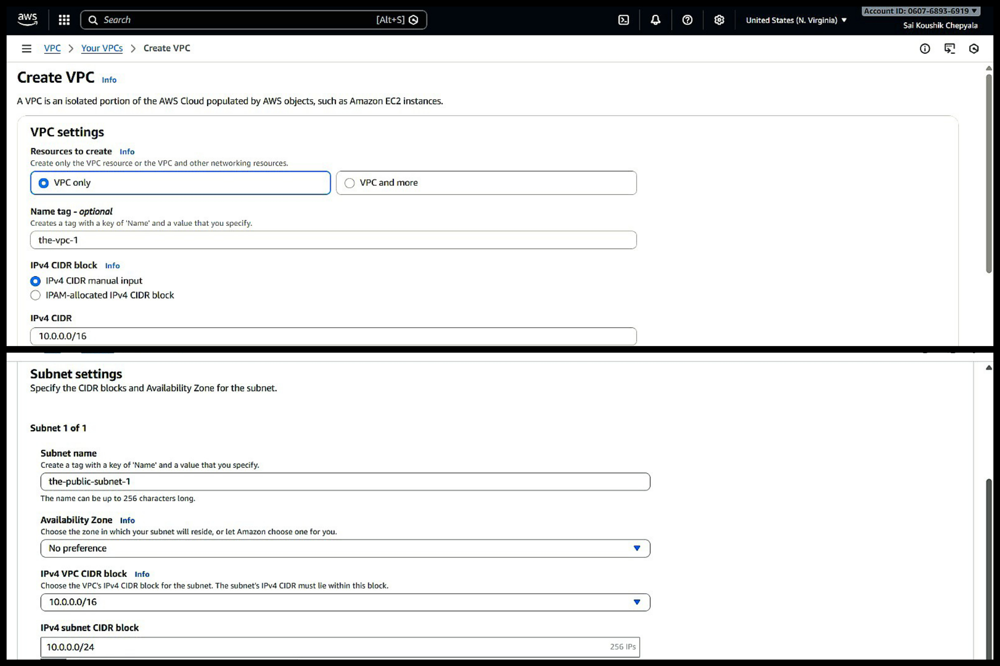
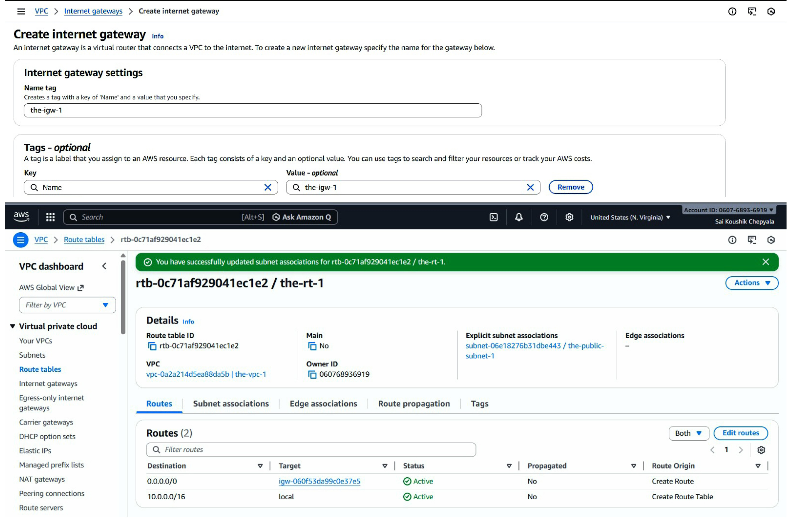
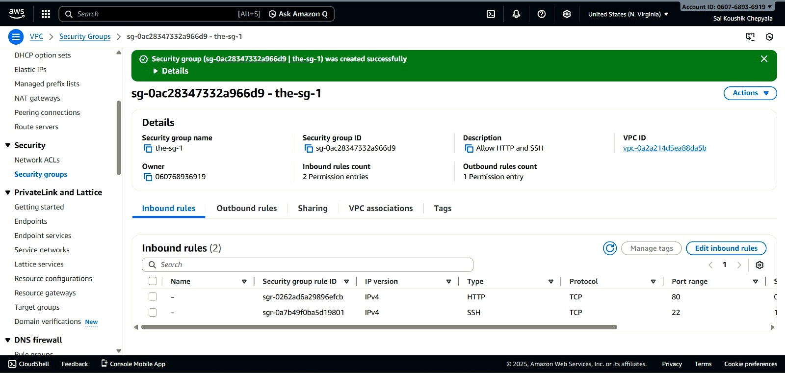
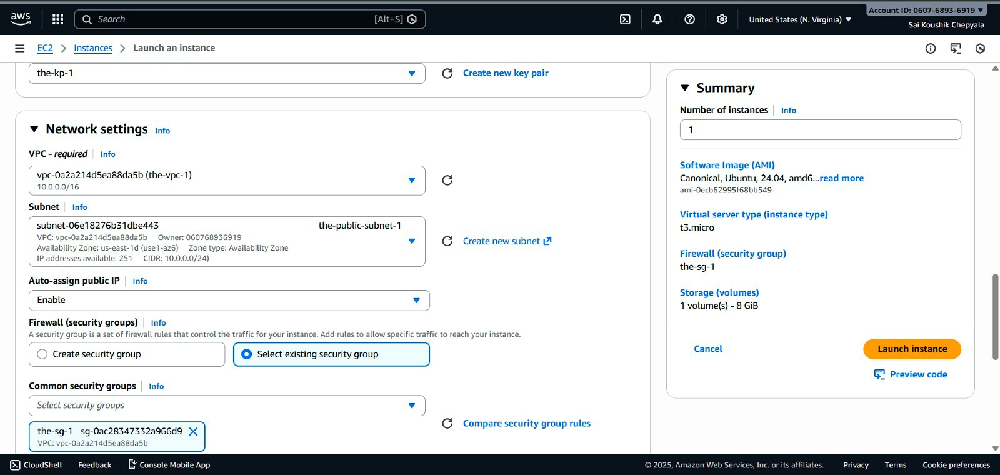
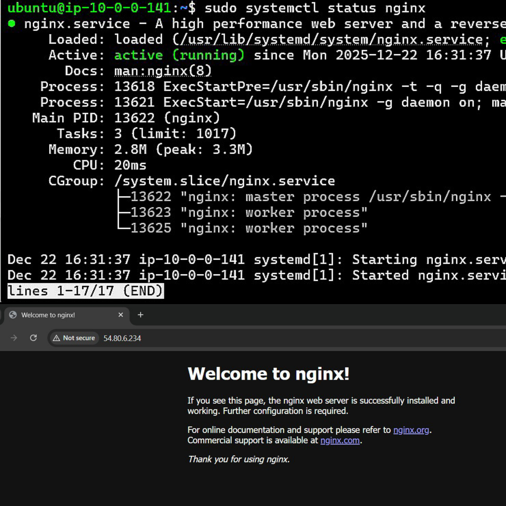
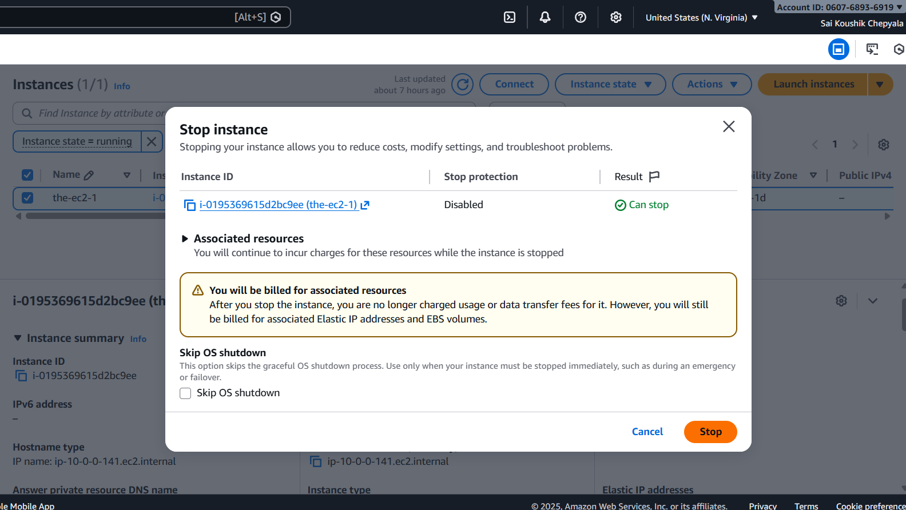

Task: How to host a simple website on AWS EC2 using Nginx
Follow the steps below to host a website on an EC2 instance using Nginx.
Step 1: Network Setup
- Create a VPC with private IP range 10.0.0.0/16
- Create a public subnet with CIDR 10.0.1.0/24
- Enable auto-assign public IPv4 for instances

⬇
⬇
Step 2: Internet Connectivity
- Create and attach an Internet Gateway to the VPC
- Add an internet route 0.0.0.0/0 → Internet Gateway in the route table
- Associate the route table with the public subnet

⬇
⬇
Step 3: Security Configuration
- Create a security group for the EC2 instance
- Allow inbound SSH access on port 22 for administration
- Allow inbound HTTP access on port 80 for web traffic
- Use default outbound rules

⬇
⬇
Step 4: Launch EC2
- Launch an EC2 instance using an Ubuntu AMI
- Select instance type t2.micro (Free Tier eligible)
- Choose the previously created public subnet and security group
- Verify the public IPv4 address in the EC2 instance details

⬇
⬇
Step 5: Web Server Setup
- Connect to the EC2 instance using SSH
- Install and start the Nginx web server
- Verify using the default Nginx page

⬇
⬇
Step 6: Website Deployment
- Remove the default Nginx page
- Deploy your static website files to /var/www/html
- Verify your website access using the EC2 public IP

⬇
⬇
Step 7: Cost Safety
- Stop the EC2 instance after testing
- Confirm instance state is Stopped
- Avoid unnecessary cloud charges

Task Completed
Thank you for going through this walkthrough.